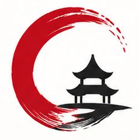
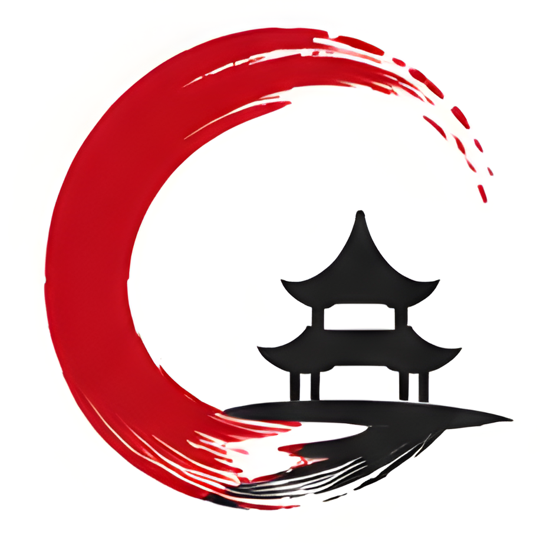

YÖN A · SOURCE SERIF 4
ÖNE ÇIKAN FİNALİST
Sessiz Kütüphane
Akademik ağırlık, sakin editoryal ritim.

Çin
Eğitim
Profil fotoğrafları için dolu zeminli, yuvarlak kırpmaya uygun simgeler. 1080 × 1080 px PNG, vektör SVG ve zemini dolu tarayıcı ikonları birlikte hazır.
Kanonik sembol kilidi, 12 farklı tipografik karakter ve canlı lockup denemeleri tek sayfada. Seçilen P-01 Yatay Ana Logo (Source Serif 4) kilitlenerek Faz 2'ye (Logo Seti & Orantı Sistemi) taşınmış, diğer alternatifler tarihsel vitrin ve araştırma arşivi olarak korunmaktadır.
Kırmızı fırça halkası (#BF0C1A), siyah pagoda ve mürekkep zemini (#202020).
Vektör yolları decisions/2026-10-10-symbol-svg-lock.md uyarınca kilitlidir;
hiçbir tasarımda yeniden çizilmez, deforme edilmez. Aşağıdaki tüm tipografiler bu orijinal SVG ile test edilmiştir.
Akademik seriflerden rasyonel grotesklere, heykelsi başlıklardan kompakt condensed kurgulara kadar Çin Eğitim sembolüyle eşleşen 12 farklı görsel ses. Kurumsal kimlik standardı gereği tüm kurgularda kanonik sembol solda, logotype sağda yer alır. Kategori butonlarıyla filtreleyebilir veya tamamını yan yana kıyaslayabilirsiniz.
Akademik ağırlık, sakin editoryal ritim.
İlk bakışta anlaşılır, dijitalde doğrudan.
Sıkı, modüler ve kurumsal bir bilgi imzası.
Zarif kontrast, gösterişsiz bir kültür tonu.
Çağdaş sans, kontrollü ve insani bir ses.
Düzenli, ölçülü, belge gibi okunaklı.
Yakın, sıcak ve kolay yaklaşılır.
Dar alanda güçlü, dikey bir imza.
Edebî karakter, belirgin ve heykelsi serif.
Geniş nefes, geometrik ve çağdaş duruş.
Daha kişisel, düşünceli ve edebî bir yakınlık.
Ağırlıklı, güven veren ve net bir bitiş.
Tüm yönlerin tasarım kategorisi, sembol yerleşimi, satır mimarisi ve önerilen kullanım alanı.
| Yön | Yazı Ailesi | Stil Ailesi | Sembol / Yazı Kurgusu | Büyük/Küçük Harf | Karakter & Duruş | Öneri Durumu |
|---|---|---|---|---|---|---|
| Yön A | Source Serif 4 | Editoryal Serif | Sembol Solda + 2 Satır | Baş Harfleri Büyük | Akademik ağırlık, sakin editoryal ritim | 🥇 1. Finalist (Tavsiye) |
| Yön B | Manrope | Hümanist Sans | Sembol Solda + 1 Satır | Baş Harfleri Büyük | İlk bakışta anlaşılır, dijitalde doğrudan | Gövde Fontu Olarak İdeal |
| Yön C | Barlow Condensed | Kompakt Sans | Sembol Solda + Çizgili 2 Satır | Tümü Büyük Harf | Sıkı, modüler, kurumsal bilgi imzası | İdari / Teknik Alternatif |
| Yön D | Cormorant Garamond | Klasik Serif | Sembol Solda + 1 Satır | Baş Harfleri Büyük | Zarif kontrast, gösterişsiz kültür tonu | Yüksek Zarafet / İnce Hat |
| Yön E | IBM Plex Sans | Rasyonel Grotesk | Sembol Solda + 2 Satır (Ağırlıklı) | Baş Harfleri Büyük | Çağdaş sans, kontrollü ve insani ses | 🥈 2. Finalist (Modern) |
| Yön F | IBM Plex Mono | Monospace | Sembol Solda + Çift Çizgili 2 Satır | Tümü Büyük Harf | Düzenli, ölçülü, arşiv kaydı hissi | Arşiv / Belge Alternatifi |
| Yön G | Nunito Sans | Yumuşak Sans | Sembol Solda + 2 Satır | Baş Harfleri Büyük | Yakın, sıcak ve kolay yaklaşılır | Dostane Alternatif |
| Yön H | Oswald | Condensed Sans | Sembol Solda + 2 Satır Dar Blok | Tümü Büyük Harf | Dar alanda güçlü dikey imza | Afiş / Dikey Vurgu |
| Yön I | DM Serif Display | Display Serif | Sembol Solda + 2 Satır Heykelsi | Baş Harfleri Büyük | Edebî karakter, heykelsi seçkin ton | 🥉 3. Finalist (Prestij) |
| Yön J | Space Grotesk | Geometrik Sans | Sembol Solda + 1 Satır Geniş Tracking | Tümü Büyük Harf | Geniş nefes, geometrik ve çağdaş duruş | Fütüristik Alternatif |
| Yön K | Lora | İtalik Serif | Sembol Solda + 2 Satır İtalik | Baş Harfleri Büyük, İtalik | Düşünceli, edebî ve kişisel yakınlık | Edebî / Mektup Tonu |
| Yön L | Roboto Slab | Slab Serif | Sembol Solda + 2 Satır Slab Blok | Tümü Büyük Harf | Ağırlıklı, güven veren, net bitiş | Sağlam / Görünür Blok |

